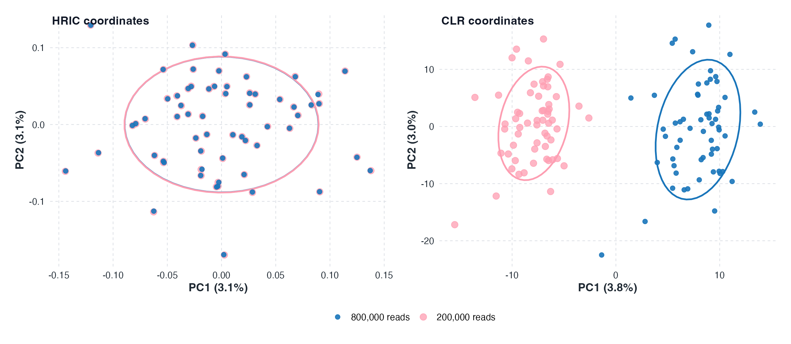

Why Simplex Hellinger geometry?
Microbiome sequencing produces counts, but ecological interpretation is usually compositional. HRIC starts from that constraint and works with the geometry induced by Hellinger distance on the simplex.
Compositional data
Counts are observed under a fixed-sum constraint
A sample-by-feature table records sequencing reads, not absolute microbial biomass. After normalization, each sample lies in the simplex:
From counts to composition
The components are relative abundances. An increase in one component must be balanced by decreases elsewhere, so ordinary Euclidean operations on raw proportions can misrepresent the sample relationship.
Zeros are ecological and technical
Exact zeros can reflect true absence, limited sampling, taxon filtering, or detection limits. Simplex Hellinger geometry treats these boundary compositions as valid inputs rather than forcing replacement before transformation.
Two geometries
Two geometries, two zero behaviors
Aitchison geometry is foundational for compositional data analysis, but the centered log-ratio transform is undefined at exact zeros. HRIC instead uses an intrinsic coordinate representation associated with Hellinger geometry, where boundary points remain valid.
| Geometry | Coordinate map | Exact zeros | Interpretive focus |
|---|---|---|---|
| Simplex Hellinger | $Z_i = \mathrm{HRIC}(\pi_i)$ | Included directly as boundary compositions | Hellinger-scale displacement from the uniform center and turnover around cohort or group centers |
| Aitchison | $\mathrm{clr}(\pi_i)_j = \log \pi_{ij} - p^{-1}\sum_k \log \pi_{ik}$ | Requires a zero-replacement rule or pseudocount | Log-ratio variation among strictly positive compositions |
Geometric diagnostic
Input counts, transformation comparison, and ε-sensitivity
A five-point diagnostic gives a compact check of the geometry. The same input profiles are read by HRIC directly, while CLR requires a stated rule for replacing exact zeros.
Input counts
| Point | Editable counts | Normalized composition $\pi$ | Status |
|---|
Enter nonnegative counts. Each row with a positive total is normalized before HRIC or CLR is evaluated; an all-zero row is not a valid composition.
CLR replacement parameter $\varepsilon$
Used only for zero components before the log-ratio map.
Transformation comparison
HRIC coordinates on the closed simplex
CLR coordinates after replacement
Coordinate norms and ε-sensitivity
| Point | Zero status | $\|Z_{\mathrm{HRIC}}\|_2$ | $\|Z_{\mathrm{CLR}}(\varepsilon)\|_2$ | $\Delta_{\mathrm{CLR}}$ from $\varepsilon=10^{-3}$ |
|---|
Coordinate norms are rounded to three decimals. HRIC and CLR norms live on different coordinate scales, so this readout is a sensitivity diagnostic rather than a direct effect-size comparison. $\Delta_{\mathrm{CLR}}=\|\mathrm{clr}(r(\pi;\varepsilon))-\mathrm{clr}(r(\pi;10^{-3}))\|_2$ shows how far a point drifts as $\varepsilon$ changes.
Motivation
Sequencing depth can manufacture apparent structure
Unequal sequencing capacity is common across microbiome studies because samples can be processed on different sequencing machines, batches, lanes, or read-depth targets. When the same biological composition is observed at lower depth, small counts are more likely to become sampling zeros.
In this simulation, 60 samples were first generated at 800,000 reads. Matched low-depth samples represent the same underlying compositions observed at 200,000 reads, so rare features are more frequently rounded to zero. PCA was then applied to HRIC coordinates and to CLR coordinates with pseudocount 0.5.

HRIC coordinates show substantial overlap between depth groups. CLR coordinates separate the same biological samples by sequencing depth, indicating a depth-driven artifact from zero replacement and log-ratio sensitivity.
Connection
The geometry supports diversity partitioning
Once samples are represented as HRIC coordinates, within-sample evenness, cohort diversity, and condition-relevant turnover can be computed in one coordinate system. The framework page defines these summaries formally.
References
Introduction sources
These sources ground the compositional and ecological geometry used in the motivation.
- Aitchison, J. (1982). The statistical analysis of compositional data. Journal of the Royal Statistical Society: Series B. doi:10.1111/j.2517-6161.1982.tb01195.x.
- Aitchison, J. (1986). The Statistical Analysis of Compositional Data. Chapman and Hall. doi:10.1007/978-94-009-4109-0.
- Legendre, P., & Gallagher, E. D. (2001). Ecologically meaningful transformations for ordination of species data. Oecologia. doi:10.1007/s004420100716.
- Gloor, G. B., Macklaim, J. M., Pawlowsky-Glahn, V., & Egozcue, J. J. (2017). Microbiome datasets are compositional: and this is not optional. Frontiers in Microbiology. doi:10.3389/fmicb.2017.02224.
- Quinn, T. P., Erb, I., Richardson, M. F., & Crowley, T. M. (2018). Understanding sequencing data as compositions: an outlook and review. Bioinformatics. doi:10.1093/bioinformatics/bty175.